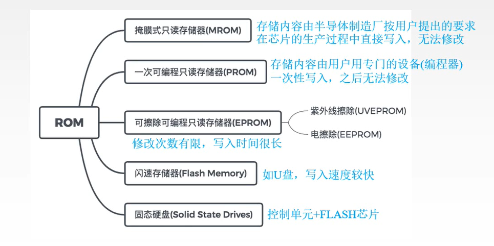

-
十进制快速换成二进制
比如十进制38：
- 写出所有比38小的次幂数字：32，16，8，4，2，1
- 然后从32——>1逐渐相加，相加时比38大则算0，否则算1
- 32（1），16（0），8（0），4（1），2（1），1（0）
- 因此(38)10 = (100110)2
小数的处理
比如十进制0.53- 0.53 × 2 = 1.06 取整数部分 1
- 0.06 × 2 = 0.12 取整数部分 0
- 0.12 × 2 = 0.24 取整数部分 0
- 0.24 × 2 = 0.48 取整数部分 0
- …直到 × 2 后结果为1为止，否则只能不断扩大精度
- 结果:0.100…
-
真值和机器码
-
真值 ：真正的值，比如
38 -
机器码：机器中表示的数
- 原码：符号位0表示正，1表示负,真值的二进制加上符号位一共8位
- 比如真值是
38时，原码为：01001100
- 比如真值是
- 反码：正数时与原码一致，负数时符号位仍是1，数值位直接对原码取反
- 比如原码：
10010110则反码：11101001
- 比如原码：
- 补码：
- 已只原码求补码：正数时和原码一致，负数时对除了符号位全部取反，再加1进行运算
- 比如原码：
11001100则补码：先取反：10110011，再加1：10110100
- 比如原码：
- 已知补码求原码：正数时原码就是该补码，负数时原码是该补码的补码
- 比如补码：
11111001则原码：先取反：10000110，再加1：10000111
- 比如补码：
- 已只原码求补码：正数时和原码一致，负数时对除了符号位全部取反，再加1进行运算
- 移码：符号位对补码取反，数值位与补码相同
- 比如原码：
11001100则补码：10110100，则移码：00110100
- 比如原码：
为什么要引入机器码
为了让机器进行加减乘除的运算，需要让计算机对
符号位进行处理，而让机器识别符号位会增加电路设计成本，因此提出了符号位参与运算的方法。根据运算法则
1-1 = 1+(-1)，因此为了简化设计，机器只有加法没有减法。-
反码：
原码的出现保证了符号位可以参与运算并且只保留加法，比如
1+1：[00000001]原 + [00000001]原 = [00000010]原 = 2 -
反码：
虽然原码可以正常处理加法，但是对减法处理则会导致一些问题，比如
1-1：[00000001]原 + [10000001]原 = [10000010]原 = -2为了解决原码减法的问题，因此引入了反码：
[00000001]原 + [10000001]原 = [00000001]反 + [11111110]反 = [11111111]反 = [10000000]原 = -0 -
补码：
虽然反码解决了减法的问题，但是由于符号位的原因导致
-0 和 +0 的的原码分别为[00000000]原 和 [10000000]原。虽然 +0 和 -0 在理解上是一样的，但是0带符号位是没有任何意义的，这将由两个编码来表示0，这将会出现这种情况1+(-0)：[00000001]原 + [10000000]原 = [1000001]原 = -1于是引入了补码，解决了0的符号和两个编码的问题，比如
1-1[00000001]原 + [10000001]原 = [00000001]补 + [11111111]补 = [00000000]补 = [00000000]原 = -0因此在补码中只有 -0 而 没有 +0 其中
[00000000]补 真值为0，而[10000000]补 真值为-128：(-1) + (-127) = [10000001]原 + [11111111]原 = [11111111]补 + [10000001]补 = [10000000]补
- 原码：符号位0表示正，1表示负,真值的二进制加上符号位一共8位
-
-
数据格式
-
整数：以补码存储
-
浮点数
机器中一个二进制的浮点数a分别由两个数m和e来表示（规格化）：a = m × be，比如 11.01B = 0.1101B × 22
其中：
- m表示尾数，一个纯小数，包括整数和小数部分
- b表示基数，一般是2
- e表示阶码，某个整数表示该浮点精确到第几位
下面表示浮点数计算机中的存储结构，其中阶符表示指数的符号，阶码表示指数的二进制部分，数符表示整个浮点数的符号，尾数表示浮点数中整数和小数部分
阶符± 阶码e 数符± 尾数m -
IEEE754标准
根据国际标准IEEE规定，任何一个二进制的浮点数都可以表示为：(-1)S * 2E * M
- S表示符号，1bit，0位正，1为负
- M表示尾数，23bit，因为尾数域最左边总是1，因此一般省略不写
- E表示阶码，8bit，用移码表示(阶码真值 + 127)
比如上面的
11.01B在IEEE754标准下就可以表示为S符号位（1bit） E阶码（8bit） M尾数（23bit） 0 10001011 110100000000000000000000
-
-
补码运算
x = +1001，y = +0101，求 x + y =? [x]补= 01001，[y]补=00101 [x]补 01001 + [y]补 00101 ___________________ [x+y]补 01110 ∴ x + y = +0110-
补码减法：
[x]补 - [y]补 = [x]补 + [-y]补 = [x-y]补其中 [-y]补 = -[y]补 + 1 (变补)
例如：
若 [x]补 = 10010
则 [-x]补 = -[x]补 + 1 = 01101 + 00001 = 01110x = +0101，y = +0110，求 x - y =? [x]补= 00101，[y]补=00110 [-y]补 = 11001 + 00001 = 11010 [x]补 00101 + [-y]补 11010 ___________________ [x+y]补 11111 ∴ x - y = -00001 -
溢出判断
在补码进行加减运算后，若数值超过2n-1 ~ -2n-1 所能表示的范围则会发生溢出
发生溢出的情况：
- 两正数相加变负数，正溢。
- 两负数相加变正数，负溢。
溢出检测方法：
-
双符号位法(变形补码+)：
运算时正数符号位位00，负数符号位为11，运算结果按下表判断是否溢出
位2 判断 0|0|正确（正数）
1|1|正确（负数）
0|1|正溢
1|0|负溢例如
x = +1001，y = -0101，求 x + y =?
[x]补= 00 01001，[y]补= 11 11011
[x]补 00 01001- [y]补 11 11011
[x+y]补 00 0010000正确，直接变成0
∴ x - y = +0100
``````x = +0110，y = +0100，求 x + y =?
[x]补= 00 1100，[y]补= 00 0100
[x]补 00 1100- [y]补 00 0100
[x+y]补 01 011001错误，正溢
``` -
原码一位乘
要了解补码一位乘首先需要知道原码一位乘
由于手算原码乘法存在一些问题：小数点如何移动，加法器无法解决n个数一次性相加…
因此为了解决这些问题需要将算法进行改造
乘法需要用到三个寄存器：
- A：存放累加和（或者叫部分积）和数值高位
- B：存放被乘数（取绝对值）
- C：存放乘数和数值低位（取绝对值）
计算过程：
-
- A 根据
C的最低位来判断是加B还是加0
- A 根据
-
- 累加后将A和右移一位 在重复 1.
-
- 将累加后的结果A和C进行拼接作为数值位，A和B的异或结果作为符号位
例：计算 [0.1101]原 * [0.1011]原 部分积A 乘数C 累加操作 说明 (0) 00.0000 0.1011 初始化寄存器,B中始终存0.1101 (1) 00.0000 0.1011 00.0000 + 00.1101 +B —————————— 00.1101 (2) 00.1101 0.1011 A和C均向右移一位 00.0110 10.101 把从A中移出的部分放到C最高位 00.0110 + 00.1101 +B 由于C的最低位是1，所以+B —————————— 01.0011 (3) 01.0011 10.101 A和C均向右移一位 00.1001 11.010 把从A中移出的部分放到C最高位 00.1001 + 00.0000 +0 由于C的最低位是0，所以+B —————————— 00.1001 (4) 00.1001 11.010 A和C均向右移一位 00.0100 111.01 把从A中移出的部分放到C最高位 00.0100 + 00.1101 +B 由于C的最低位是1，所以+B —————————— 01.0001 (5) 01.0001 111.01 由于A的最低位是1所以A和C均向右移一位 00.1000 1111.0 把从A中移出的部分放到C最高位 1000 1111 保留有效部分:A小数部分前4个，C整数部分前4个 结果: 符号位对AB的符号位进行异或运算（相同为0，相反为1）： 0 数值位：直接将A和C中有效部分进行拼接： 10001111 因此[0.1101]原 * [0.1011]原 = [0.10001111]原-
补码一位乘
booth（比较法）
与原码一位乘类似，一样也需要3个寄存器，但是只有C取绝对值：
- A：存放累加和（或者叫部分积实际上是数值高位）
- B：存放被乘数
- C：存放乘数和数值低位（取绝对值）
计算过程与原码一位乘类似，A 根据
C的最低两位来判断 是加B还是减B 还是加0，booth算法需要遵循下表C倒数第二位|C倒数第一位|运算操作
------|------|------
0|1|右移一位+B
1|0|右移一位-B
0|0|右移一位+0
1|1|右移一位+0在计算结束后还需要根据该表来进行校正
例：计算 X=-0.1101，Y=-0.1011，计算[XY]补 初始化寄存器： A = 00.0000 B = [X]补 = 11.0011 -B = [-X]补 = 00.1101 C = [Y]补 = 1.0101 部分积A 乘数C 累加操作 说明 (0) 00.0000 1.01010 初始化寄存器,并在C末尾补个0 (1) 00.0000 1.01010 00.0000 + 00.1101 + -B 由于C对最后两位是10所以-B —————————— 00.1101 (2) 00.1101 1.01010 A和C均向右移一位 00.0110 11.0101 把从A中移出的部分放到C最高位 00.0110 + 11.0011 +B 由于C对最后两位是01所以+B —————————— 11.1001 (3) 11.1001 11.0101 A和C均向右移一位，由于A现在是负数，所以要在左边补1 11.1100 111.010 把从A中移出的部分放到C的最高位 11.1100 + 00.1101 + -B 由于C对最后两位是10所以-B —————————— 100.0001 00.1001 发生了进位只保留有效位 (4) 00.1001 111.010 A和C均向右移一位 00.0100 1111.01 把从A中移出的部分放到C的最高位 00.0100 + 11.0011 +B 由于C对最后两位是01所以+B —————————— 11.0111 (5) 11.0111 1111.01 A和C均向右移一位，由于A现在是负数，所以要在左边补1 11.1011 11111.0 把从A中移出的部分放到C的最高位 校正： 11.1011 + 00.1101 +B 由于C对最后两位是10所以-B —————————— 100.1000 00.1000 发生了进位只保留有效位 00.1000 11111.0 1000 1111 保留有效部分:A小数部分前4个，C整数部分前4个 结果: 符号位直接取A的：0 数值位：直接将A和Cn中数值位拼接： 10001111 因此[XY]补 = 00.1000111 = +0.10001111
-
-
浮点数运算
-
加减法
ps: 尽量采用双符号位，方便判断是否溢出。
分为五步：
举例：X = 00.1110 × 23，Y = 00.1001 × 24，求X + Y
-
对阶：把阶数小的浮点数向阶数大的变化。
这里X阶数是3，比Y的阶数小因此 X = 00.1110 × 23 = 00.01110 × 24
-
对尾数进行相加减
00.01110 + 00.1001 —————————————— 01.00001 -
规格化
只有两种情况需要规格化，其他情况保持不变：
-
运算结果的符号位不同时（比如 10.xxxxx 或 01.xxxxx），右规（运算结果的尾数向右移一位），然后阶码+1
比如上面的运算结果 01.00001 符号位不同，因此右规，变成00.100001（正数补0），阶码-1
或者10.11101 符号位不同，溢出右规，变成11.011101（负数补1），阶码-1
-
运算结果的符号位相同，但最高位与符号位相同时（比如11.1xxxxxx 或 00.0xxxxxx），左规（运算结果的尾数向左移直到最高位与符号位不同为止），然后阶码-n（n表示移动了几位）
比如00.001010，最高位和符号位都是0，因此左归：00.1010，阶码-2
-
-
舍入
在对阶或右规时，可能在尾数低位部分加上一部分值，以保证位数和原来的数值相同。
一般有两种方法：
-
0舍1入法：如果舍去的最高位是0，则不管；如果舍去的最高位是1，则在尾数末尾+1
比如 11.11001001 要舍掉的部分是1001，最高位是1，因此舍入后：11.1101
如果舍入后又出现溢出，则继续右规再舍入
-
置1法：去掉多余的尾数，并保证去掉后的最后一位是1（如果是0则改成1）
比如 00.100001 舍入后：00.10001，但这种做法精度并不高，但简单
-
-
检查阶码溢出
右规或左规都可能导致阶码溢出
如果上溢（阶码符号位为01），则进行中断处理
如果下溢（阶码符号位为10），则阶码和尾数全部置0(也叫做机器零处理)
x = 101.1，y = -10.01 设浮点数阶码取三位,尾数取4位求 x + y = ? 解： x = +101.1 = +0.1011 * 2^3 = 00.1011 * 2^(00 101) y = -10.01 = -0.1001 * 2^2 = 11.1001 * 2^(00 010) 1.对阶： y = 11.01001 * 2^(00 101) 2.尾数相加减: 00.1011 + 00.01001 ———————————— 00.11111 3.规格化： 00.11111符号位为00，最高位为1，因此不需要规格化 4.舍入： 采用置1法： 舍入后：00.1111 5.检查阶码溢出 阶码仍为00 101符号位为00 因此不溢出 因此x + y = 0.1111 * 2^(00 101) = 111.1
-
-
乘法除法
分为三步：
比如 X = 00.1011 * 2^(00 101)，Y = 11.1001 * 2^(00 010),求X × Y
- 求阶和/差：
00 101 + 00 010 —————————— 00 111-
尾数相乘/相除
A C 操作 00.0000 + 00.1011 .1001 +B —————————— 00.1011 00.0101 1.100 + 00.0000 +0 —————————— 00.0101 00.0010 11.10 + 00.0000 +0 —————————— 00.0010 00.0001 111.1 + 00.1011 +B —————————— 00.1100 1111. 因此相乘结果为: 00.11001111 -
规格化
浮点数乘除运算的结果中，由于乘积和商的绝对值一定小于1，因此只存在左规不存在右规
这里不需要进行规格化
-
舍入：
直接用置1法：00.1101
-
溢出判断
阶码00 111符号位仍为00，因此无溢出
因此 X × Y = 0.1101 × 27
-
-
逻辑代数
-
数字量和模拟量
数字量是离散的，表现为非连续的离散点，比如苹果的个数等
模拟量是连续的，表现为连续变换的变量，比如温度和电压等
-
格雷码
格雷码保证了信号量变换时只有一位的变换,若低位都变过则高一位变，否则从最低位开始变
十进制 二进制 格雷码 0 0000 0000 1 0001 0001 2 0010 0011 3 0011 0010 4 0100 0110 5 0101 0111 6 0110 0101 7 0111 0100 8 1000 1100 9 1001 1101 格雷码转二进制码，方法是：二进制的最高位和格雷码一致，其余的位用二进制的前一位与格雷码的后一位做异或运算,相同为0，相异为1
-
基本定律

-
基本规则
-
卡诺图
-
最小项
所谓最小项是指有且仅有一个的表达式，该表达式包含了所有变量的乘积项，含有n个变量的最小项含有n个因子
比如三个变量A,B,C一共有 23 = 8 个最小项，分别是

-
最小项编号
把最小项的取值当成二进制数，再将其转换成十进制数，因此每个最小项的编号是唯一的，最小项编号用字母m加上下标来表示
-
最小项表达式
由若干个最小项的或运算组合而成，每一个逻辑函数都可以化成最小项表达式
-
通过组合合并最小项并减小变量
一般用在得出最小项表达式后进行最小项合并(化简)
步骤：
- 把不是最小项的项通过 * 1 的操作来变成最小项
- 把最小项表达式中的每一小项填入卡诺图
- 画出所有组合（一般顺序为：八方格 → 四方格 → 二方格 → 无组合）
- 根据消去定律消去组合中的变量
- 把所有消去后的变量相加（或运算）
卡诺图的常用组合：
-
二方格的相邻组合：任何相邻的最小项可合并，且消去一个变量

-
四方格的相邻组合：4个相邻最小项可合并成一项，且消去两个变量

-
八方格的相邻组合：8个相邻最小项可合并成一项，且消去三个变量

例子：


-
-
-
存储系统
-
存储器的分类：
- 按存储介质分：磁芯存储器、磁表面存储器、半导体存储器、光存储器
- 按存取方式分：随机/顺序存取（磁带）
- 按读写功能分类：ROM，RAM
- RAM（随机存储）：BJT双极型/MOS单极型，所谓随机存取，是指存取时间与存储单元位置无关，断电丢失数据因此也叫做易失性存储器
- ROM（只读存储）：MROM/PROM/EPROM/EEPROM
- 按信息的可保存性分类：永久性和非永久性的
- 按存储器系统中的作用分类：主/辅/缓/控
对存储器的要求是容量大、速度快、成本低，为了解决这三方面的矛盾，计算机采用多级存储体系结构，即cache、主存、外存
主存储器的技术指标有 存储容量，存取时间，存储周期，存储器带宽。

-
主存储器
主存储器（内部存储器）是半导体存储器，一般采用DRAM的半导体存储器，其中包含了RAM + ROM
主存的结构：
- 存储体：由多个存储元组成，负责存储具体的二进制位
- MAR: 存储器地址寄存器，负责接收外部传入的地址信息
- MDR：存储器数据寄存器，负责暂存接收或传出的数据信号
存储体、MDR、MAR均在时序控制逻辑的控制下协调工作

红色的线表示并行控制信号,能并行地控制多个存储元。逻辑上将存储元分组，一行一组，每一组又叫做一个
存储单元。绿色的线表示对存储元的信号进行传入和传出。
在有电的时候才能存在那些电信号（绿色的二进制位），一次取出来的这些电信号叫做一个
存储字。根据存储单元设计的不同，存储字的位数可以不同。因此我门把存储字的位数叫做存储字长，像这里的存储位数是8位，那么存储字长就是8bit = 1Byte（一般都会是8的整数倍，因此一般用字节Byte做单位）。存储体的这种设计也会有一些问题，比如同时在两条红线上放一个读信号，那么每一条绿线上可能会有两个电信号。这将会导致红线可能收到一个不是它想要的信号。
因此这样的存储方式将会收到限制：一次只能使一行的存储单元有效，也就是说一次只能有一条红线表示有效。这会非常浪费资源，因为按理来说一个二进制位应该能表示2n种状态，但是我们只需要表示某一个存储单元上的2种状态。
解决这个问题的方式是通过译码器，将n位的二进制地址来表示2n个存储单元，以此减少输入控制信息的位数。


我们常常把存储体抽象成
存储矩阵，一个存储矩阵由多个存储单元构成，像下面的每一个格代表一个存储单元而不是存储元。通过存储矩阵，我们可以将地址按不同需求分组，如下图。分组之后，可以先找到高位地址部分，再去找低位地址，如蓝色部分是按字寻址，把地址分成了四份，红色框圈起来的就是高位的地址。
分组后应该如何存放一个字呢，还是以按字寻址为例，一个单元4B也就是32位，一般的计算机有两种方法：大端方式和小端方式。大端方式就是指，如果单元头为第一位为12，往后每个单元的地址就是12*n，小端方式就是反过来。

-
半导体存储器

在主存中提到了DRAM，这里详细说一下DRAM和SRAM的区别：
半导体存储器根据信息存储的机理不同可以分为两类：
- 静态读写存储器(SRAM)：采用双译码方式，存取速度快，存储位元是一个触发器
- 动态读写存储器(DRAM)：存储容量不如SRAM大，存储位元是由一个MOS晶体管和电容器组成的记忆电路
具体区别如下

DRAM
DRAM的最大作用就是能减少选根线的使用数量：

可以看到，原本需要使用256根选通线的存储器，现在只需要使用32根选通线。由于DRAM能以此选择多个选通线，因此，它能一次刷新多个存储单元
SRAM

-
ROM
之前提到，RAM是一种易失性存储器，一旦断电，将会失去信息。CPU的任务是到主存中取指令，然后再按指令的指示进行下一步工作。因此断电后CPU到主存中取指令时将会发生错误。而辅存（硬盘之类的）不能和CPU直接通信，是通过I/O接口连接到主机的，而I/O操作也是需要主存来完成的。因此我门需要另外的能做到断电后不丢失数据，而且能和CPU直接通信的存储器，这就是ROM（只读存储器）。
ROM的作用：存放不同程序的操作指令及各种需要计算、处理的数据，所以它相当于整个电路系统存储信息的仓库。
它可以指出辅存在OS中的位置，并且把I/O接口调到RAM中。完成这一步后CPU再去访问RAM就能收到正确的指令了
ROM各个版本的发展历程：

早期的ROM是只读的，现在的ROM虽然能写，但是速度依然很慢，因此不能用ROM代替RAM
-
并行存储器
双端口存储器和多模块交叉存储器属于并行存储器结构，其中前者采用 空间并行技术，后者采用 时间并行技术。
-
Cache高速缓冲存储器
Cache的局部性原理
空间局部性：比如一段连续的数组，我这一次可能取的a[1]，那么我下一次有可能取到a[2]，这样每一次存或取都会访问一次主存。
时间局部性：比如for循环遍历数组，我在一次循环中可能取的a[1]，那么我在有可能在下一次循环中取到a[2]，这样每一次取都会访问一次主存。
假设主存的一次的存取时间是1000ns，CPU完成一次+2操作需要5ns，那么执行这一条for语句中的"a[i]=a[i]+2"将耗时：1000 + 1000 + 5 = 20005ns。
我们能看到如果能一次就取出未来要用的数据，那么能很大程度上提高性能。
为了解决时间局部性和空间局部性，我们需要一个小容量但高速的存储器来暂存未来要用的数据块，这个存储器就是
Cache。
可以看到通过Cache，整体执行时间少了17倍左右


Cache的地址映射
之前提到了Cache把主存的数据以块的方式暂存起来，那么我们来思考三个问题：
- 主存中的块放到Cache中的哪个位置？
- (1) 全相联映射：空位随意放
- (2) 直接映射：对号入座
- (3) 组相联映射：按号分组，组内随意放
- 对于(1)当Cache满了怎么办，对于(2)(3)位置被占用时怎么办
对于这种情况，无非就是要把哪个占了位置的家伙踢走，常用的策略有：
- 随机(RAND)算法：随机踢一个
- 先进先出(FIFO)算法：踢最先进来的那个
- 最近最久未使用(LRU)算法：踢最久没用到的那个
- 最近最少使用(LFU)算法：踢用的最少的那个
- 修改Cache中的内容后，如何保持主存中对应内容的一致性？
分两种情况讨论，当命中时；当不命中时。
-
虚拟存储器
虚拟存储，就是把 内存 与 外存 有机的结合起来使用，从而得到一个容量很大的“内存”，这就称之为虚拟存储。
虚拟存储器是一个逻辑模型，它对操作系统来说是透明的。
它的功能是：用户给出一个地址，叫做
虚地址（逻辑地址），虚拟存储器要给出该地址对应的数据并反馈给用户。虚拟存储器由辅助硬件将
虚地址映射 到主存当中的某个单元，主存单元的地址又被称为实地址（物理地址）。
-
-
指令系统
一条指令就是机器语言中的一个语句，它是一组有意义的二进制代码。
一条指令通常要包括
操作码字段(OP)和地址码字段(A)两个部分操作码表示用户要干什么，而地址码表示要对谁进行操作
一个较为完善的指令系统，应当由数据处理、数据存储、数据传送、程序控制 这四大指令
-
指令格式
比如下面的指令是一条四地址的指令，它的含义是指把A1 和 A2 取出来，进行OP操作，把计算结果存放到A3中，然后从A4中取出下一条指令

我们发现可以单独把指令和地址分开放，那么每次执行完这条指令就自动取下一条连续的指令就可以了，这就简化成三地址指令，如下。

如果把A1和A2完成计算后把结果放到A1上将其覆盖，那么还可以简化成二地址指令
如果操作数本身只有一个或者另外一个操作数是隐含约定的目的地址，那么可以再简化成一指令地址
还有一种地址指令，它不需要操作数因此，可以简化成零指令地址

-
指令寻址
指令寻址有2种（顺序型，跳跃型）

-
数据寻址
数据寻址有8种（隐含、立即，直接，间接，寄存器直接，寄存器间接，偏移寻址（相对寻址、基质址址、变址寻址），堆栈寻址
寻址特征表明了该操作数采用哪种数据寻址方式；形式地址根据寻址特征的不同，有不一样的含义

-
立即寻址
形式地址就是操作数本身，一般采用补码形式

-
直接寻址
形式地址就是操作数的在主存中真实地址

-
间接寻址
形式地址是操作数在主存中地址的地址（套娃）

-
寄存器寻址（寄存器直接寻址）
和直接寻址类似，只不过形式地址是操作数所在在寄存器中的地址（寄存器的编号）

-
寄存器间接寻址
和间接寻址类似，操作数地址仍然是在主存中的，但操作数地址的地址是由寄存器所给出的

-
隐含寻址
在指令中隐含着操作数的地址。如单地址的指令格式，就不是明显地在地址字段中指出第二个操作数的地址，而是规定累加器ACC作为第二操作数，指令格式明显指出的仅是第一操作数的地址。因此，累加器ACC对单地址指令格式来说是隐含地址。

-
偏移寻址
偏移寻址其实就是对寄存器中的内容再加上一个偏移量A（形式地址），所得到的一个新的地址作为操作数的有效地址

偏移寻址又可以分为相对寻址、基质址址、变址寻址
-
-
CISC和RISC


-


-
中央处理器CPU
中央处理器CPU = 运算器 + cache + 控制器 ，它的主要功能如下：

运算器主要对数据进行加工，控制器主要控制计算机各个部件的执行程序的指令序列，基本功能包括：取指令、分析指令、执行指令
运算器:算术逻辑单元(ALU)、通用寄存器(R0～R3)、数据缓冲寄存器(DR)、状态字寄存器(PSW)

控制器组成：程序计数器(PC)、指令寄存器(IR)、数据缓冲器(DR)、地址寄存器(AR)、通用寄存器(R0~R3)、状态寄存器(PSW)、时序发生器、指令译码器、总线（数据通路）

cache：
- 指令cache：PC，IBUS
- 数据cache：AR，DBUS

-
指令周期和数据流
CPU从 主存 取出一条指令并执行这条指令的时间和称为 指令周期。
CPU周期通常又称机器周期，一个机器周期又由多个时钟周期组成
通常把一条指令周期划分为若干个机器周期，每个机器周期完成一个基本操作。

指令周期流程
- 取指周期：取指令（读操作）

- 间址周期：取有效地址（读操作）

- 执行周期：取操作数（读操作）

- 中断周期：保护程序断点（写操作）

-
硬布线控制器的设计
CU的第一种设计方案
控制方式：控制不同操作序列时序信号的方法
-
同步控制方式（指令的机器周期和时钟周期数不变）
- 完全统一的机器周期执行各种不同的指令
- 采用不定长机器周期
- 中央控制于局部控制的结合
-
异步控制方式
每条指令需要多长时间就占多长时间
3 联合控制方式
- 大部分指令在固定的周期内完成，少数难以确定的操作采用异步方式
- 机器周期的节拍脉冲固定，但是各指令的机器周期数不固定（微程序控制器采用）
-
-
微程序控制器的设计
CU的第二种设计方案
一些基本概念：
-
微指令:
把在同一CPU周期内并行执行的微操作控制信息，存储在控制存储器里，称为一条微指令
-
微程序:
一系列微指令的有序集合就是微程序。一段微程序对应一条机器指令，每条机器指令由一段微指令编程的微程序来解释执行.
-
微地址:
存放微指令的控制存储器的单元地址
-
微命令：
控制部件向执行部件发出的各种控制命令叫作微命令，它是构成控制序列的最小单位。
-
微操作：
是微命令的操作过程。
事先把微操作控制信号存储在一个专门的存储器（控制存储器）中，将每一条机器指令编写成一个微程序，这些微程序可以存到一个控制存储器中，用寻址用户程序机器指令的办法来寻址每个微程序中的微指令。
为确定下一条微指令的地址，通常采用断定方式，其基本思想是通过微指令顺序控制字段由设计者指定或由设计者指定的判别字段控制产生后继微指令地址
-
-
总线
定义：总线是一组能为多个部件分时共享的公共信息传送线路。分时是指不同的设备在不同时刻获得总线的使用权
为什么使用总线：早期的计算机外部设备大多使用分散连接的方式，不易实现随时增减外部设备
总线的特性：

总线的分类

-
总线的仲裁
总线作为一种共享设备，不可避免地会出现同一时刻有多个设备竞争总线控制权的问题，因此需要实现总线仲裁。
总线仲裁的定义：
多个主设备同时竞争主线控制权时，以某种方式选择一个主设备优先获得总线控制权称为总线仲裁。
总线仲裁方式的分类：
-
链式查询（菊花链）：
离总线控制器越近的部件，其优先级越高；离总线控制器越远的部件，其优先级越低
优点
1.链式查询优先级固定 2.只需要少数控制线就能按一定优先次序实现总线控制，结构简单，扩产容易缺点
1.对硬件电路的故障敏感，并且优先级不能改变 2.当优先级高的部件频繁请求使用总线时，会使优先级较低的部件长期不能使用总线 -
计数器定时查询
用一个计数器控制总线使用权，相对链式查询方式多了一组设备地址线，少了一根总线响应线BG，它们仍公用一根总线请求线BR
优点
1.计数器的初始值可以改变优先次序 2.对电路的故障没有链式敏感缺点：
1.增加了控制线数 2.控制相对比链式查询复杂 -
独立请求
每一个设备均有一对总线请求BR和总线允许线BG
优点
1.响应速度快，总线允许信号BG直接从控制器发送到有关设备，不必在设备间传递或者查询 2.对优先次序的控制相当灵活。缺点
1.控制数量多，若设备有n个，则需要2n+1条控制线。其中+1为BS线，其用处为，用于设备向总线控制部件反馈已经使用完毕总线 2.总线的控制逻辑更加复杂
不需要中央处理器，每个潜在的主模块都有自己的仲裁器和仲裁号，多个仲裁器竞争使用总线。
工作流程：
- 当设备有总线请求时，它们就把各自唯一的仲裁号发送到共享的仲裁总线上；
- 每个仲裁器将从仲裁总线上得到的仲裁号与自己的仲裁号进行比较；
- 如果仲裁总线上的号的优先级高，则它的总线请求不予响应，并撤销它的仲裁号；
- 最后，获胜者的仲裁号保留在仲裁总线上。
-
-
-
I/O系统
外围设备的定时方式和信息交换方式:
-
程序查询方式
-
程序中断方式
-
DMA方式
-
通道方式
-
程序查询方式
-
程序中断方式
程序中断是指，在计算机执行现行程序的过程中，出现某些急需处理的异常情况或特殊情况，CPU暂时中止现行程序，而转去处理异常或特殊请求，处理完毕后又自动返回到现行程序的断点处，继续执行原程序。
中断请求可以根据中断信号的来源分为 内中断 和 外中断

发生中断请求的条件可能是 一次I/O操作结束、机器内部发生故障、一次DMA操作结束
CPU响应中断请求的条件：
- 中断源有中断请求
- CPU开中断（允许中断）
- 一条指令执行完毕，且没用更紧迫的任务
中断判优可以由硬件（硬件排队器）实现，也可以由软件（查询程序）实现
中断隐指令：由硬件完成的软件无法完成保存PC的任务
程序中断的过程：

中断隐指令的主要任务
- 关中断
- 保存断点
- 引出中断服务程序：软件查询法、硬件向量法
硬件向量法是指 由 硬件 产生 的 向量地址，再由 向量地址 找到中断服务程序入口地址（也就是说向量地址是地址的地址）
-
DMA方式
直接存储器访问（Direct Memory Address）DMA方式是为了在主存储器与I／O设备间高速交换批量数据而设置的。
基本思想是：通过硬件控制实现主存与I／O设备间的直接数据传送，在传送过程中无需CPU的干预。数据传送是在DMA控制器控制下进行的，
DMA 控制器按其结构,分为 选择型DMA 控制器和 多路型DMA 控制器。 前者适用于高速设备,后者适用于慢速设备。
采用DMA方式传送数据时，每传送一个数据，就要占用一个 存储周期 的时间。
-